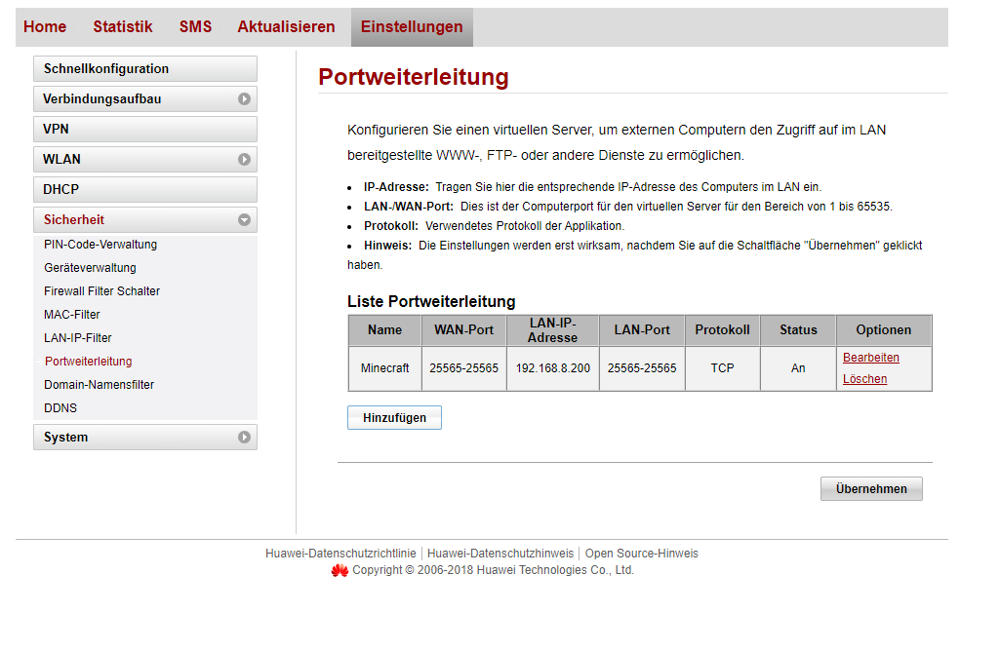
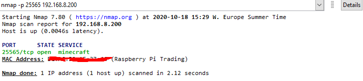
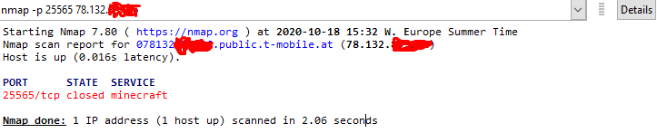
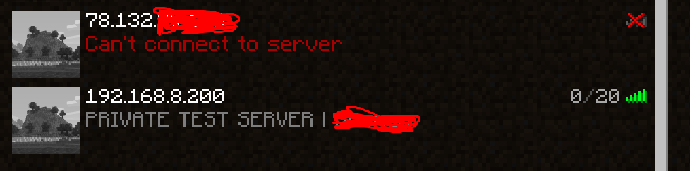

Hallo,
ich versuche gerade einen Minecraft-Server über einen Raspberry-Pi aufzusetzen. Das ganze funktioniert im lokalen Netz mit der privaten IP wunderbar, aber die Portweiterleitung scheint nicht zu funktionieren. Daher kann ich mich nicht über die öffentliche IP mit dem Server verbinden und andere Leute auch nicht. Ich hab einfach keine Idee mehr woran es liegen könnte.
Ich kann meine öffentliche Adresse pingen
Ich sehe, dass der Dienst über die private Adresse wunderbar läuft, über die öffentliche Adresse läuft auf dem Port kein Dienst.
Ein Minecraft-Server läuft soweit ich weiß über Port 25565 und verwendet auf jeden Fall TCP. Falls es hilft, ich habe einen Huawei B525-23a Router.
Hier noch ein paar Bilder:
   
Ob du dich von außen Verbinden kannst mit der öffentlichen IP-Adresse musst du auch von außen testen, weil der Router wahrscheinlich kein NAT Loopback unterstützt. Also Hotspot am Handy aufmachen und darüber versuchen.
Hast du außerdem wirklich eine öffentliche IP-Adresse am Router anliegen (Business APN)?
Die IP-Adresse am B525 unter Einstellungen -> System -> Geräteinformationen -> WAN IP-Adresse muss dieselbe sein, wie unter https://www.whatsmyip.org/ , nur dann ist diese wirklich öffentlich. Außerdem wird sich deine öffentliche IP-Adresse immer wieder ändern (ist dynamisch), heißt du musst deinen Mitspielern immer die neuste geben, außer du setzt am Pi auch einen DDNS Server aus (dieser verbindet dann die aktuelle öffentliche IP-Adresse mit einer URL).
Solltest du den Business APN noch nicht eingerichtet haben:
Name: publicIP
APN: business.gprsinternet
Benutzername: t-mobile
Passwort: tm
LG NTM
{kind=link}